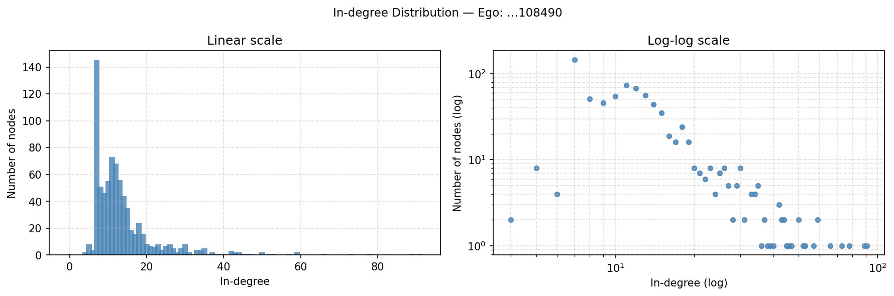
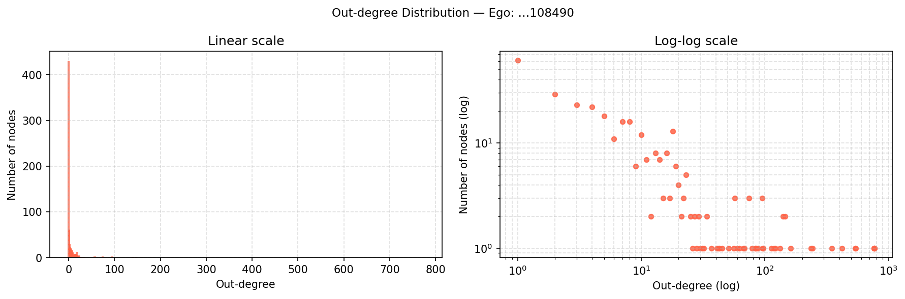
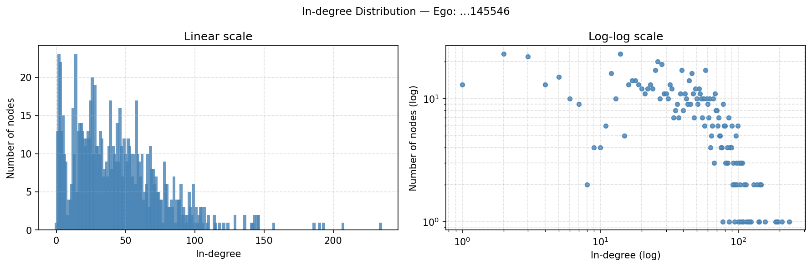
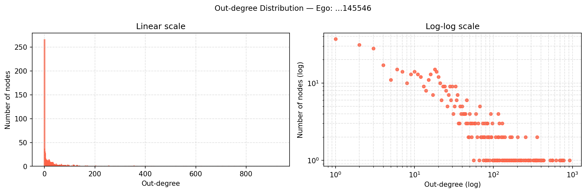
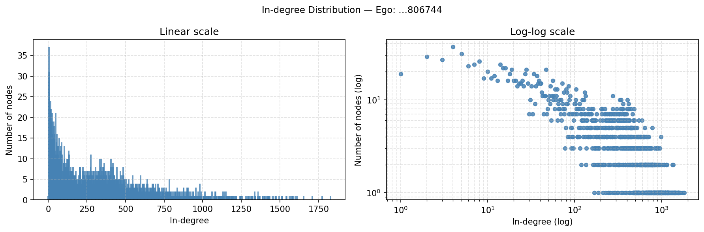
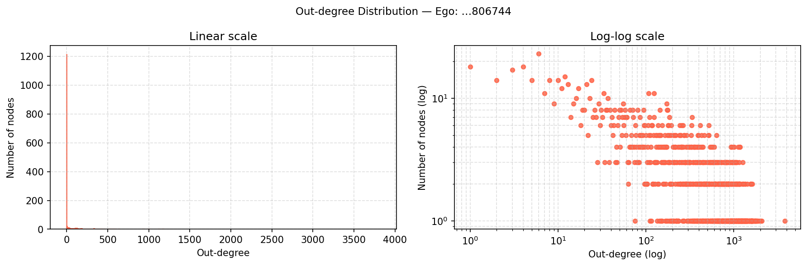
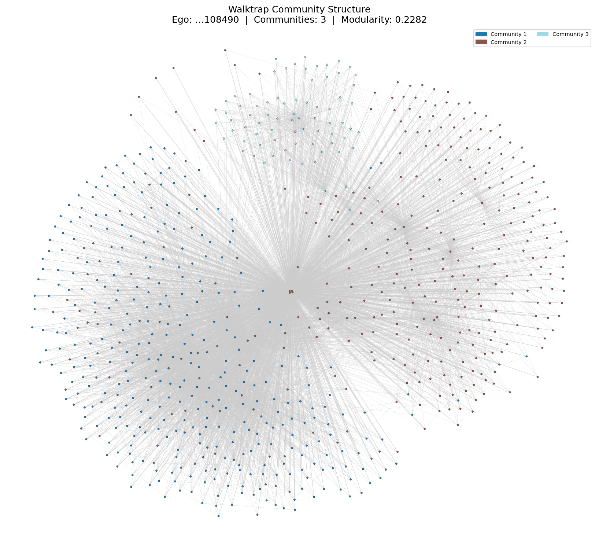
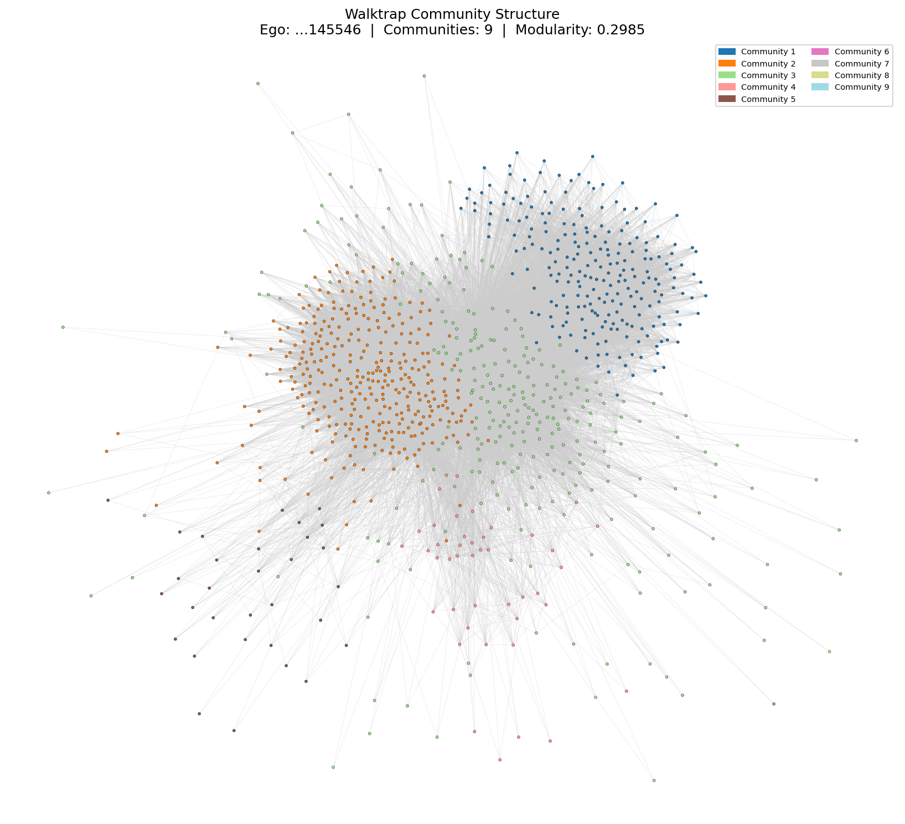
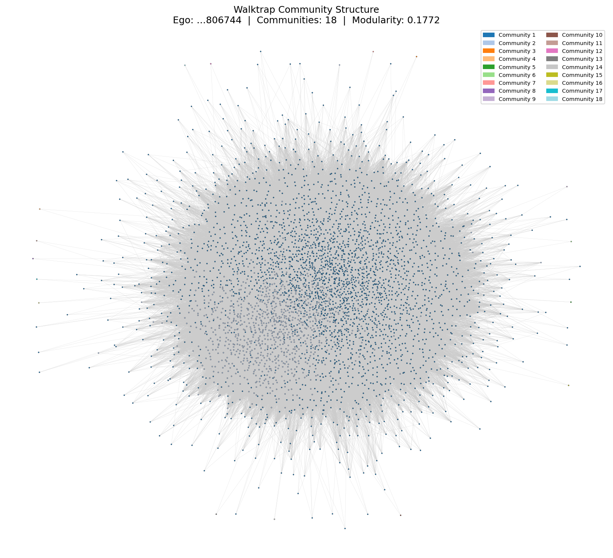

Among all 132 ego nodes that have a .circles file in the dataset, we keep only those that satisfy both of the following conditions:
.edges file.After filtering, there are 57 personal networks.
We build a directed personal network for each of the three specified ego nodes from the .edges file, which records directed edges among the ego node's contacts. Following the standard ego-network construction, the ego node itself is explicitly added to the graph with a directed edge from the ego node to every other node in the network (i.e., ego → neighbor for all neighbors). The basic statistics of the three networks are summarised below:
| Ego Node | Nodes | Edges (directed) | Avg In-degree | Max In-degree | Avg Out-degree | Max Out-degree |
|---|---|---|---|---|---|---|
109327480479767108490 |
774 | 10,884 | 14.06 | 91 | 14.06 | 773 |
115625564993990145546 |
924 | 40,323 | 43.64 | 234 | 43.64 | 923 |
101373961279443806744 |
3,815 | 1,137,321 | 298.12 | 1,826 | 298.12 | 3,814 |
Note: The average in-degree always equals the average out-degree by the directed graph identity . The maximum out-degree equals in each case, corresponding to the ego node which connects to every other node.
109327480479767108490 

115625564993990145546 

101373961279443806744 

No. Although the average in-degree and average out-degree are numerically equal for each network (a basic identity of directed graphs), their distributions are structurally very different within each network and across networks.
In-degree shows a right-skewed, heavy-tailed distribution in all three networks: most nodes receive very few incoming edges, while a small number of highly-followed nodes have much higher in-degrees. For …108490, the distribution peaks around degree 5–20 and tapers off to a maximum of 91. For …145546, it is more spread out with a right tail reaching 234. The largest network, …806744, has the widest spread, with in-degrees extending to 1,826, consistent with a heavier-tailed distribution driven by a large and diverse follower base.
Out-degree is also right-skewed but exhibits a distinctly different shape. The overwhelming majority of nodes have very low out-degrees (close to 0), producing an extreme spike at the left end of the linear-scale plot. The distribution then has an extremely long, flat tail. The dominant outlier in each network is the ego node itself, whose out-degree equals (773, 923, and 3,814 respectively), placing it far to the right of all other nodes. This makes the linear-scale out-degree plot appear as a single tall bar near zero with one isolated point at the far right.
In summary, the in-degree and out-degree distributions are not similar within any individual network. In-degree is more broadly distributed across mid-range values with a gradual heavy tail, while out-degree is extremely concentrated near zero with one dominant hub (the ego node). This asymmetry reflects the structural role of the ego node in the personal network construction and the natural variation in how actively users follow others.
For each of the three personal networks from Q19, we apply the Walktrap community detection algorithm (random walk length = 4 steps). Since Walktrap requires an undirected graph, each directed personal network is first converted to its undirected counterpart by ignoring edge directions and collapsing parallel edges.
| Ego Node | Nodes | Edges (undirected) | # Communities | Modularity | Top Community Sizes |
|---|---|---|---|---|---|
109327480479767108490 |
774 | 9,843 | 3 | 0.2282 | 419, 279, 76 |
115625564993990145546 |
924 | 34,945 | 9 | 0.2985 | 335, 280, 230, 43, 31, … |
101373961279443806744 |
3,815 | 958,395 | 18 | 0.1772 | 2,920, 879, 1, 1, … |
Ego node 109327480479767108490 (3 communities, modularity = 0.2282)

The three communities are visually well-separated in the force-directed layout. The two dominant communities (419 and 279 nodes) occupy the left and right halves of the graph respectively, while the smallest community (76 nodes) forms a distinct sub-cluster in the upper region. This clear spatial separation is consistent with the moderate modularity score of 0.2282, indicating genuine but not sharply defined community boundaries.
Ego node 115625564993990145546 (9 communities, modularity = 0.2985)

The layout reveals a densely connected core where the three largest communities (335, 280, and 230 nodes) are interleaved, surrounded by smaller peripheral groups visible as scattered coloured nodes. The highest modularity (0.2985) among the three networks reflects genuine subgroup structure. The three roughly equal-sized dominant communities suggest a balanced partitioning of the social network, while the smaller peripheral communities likely correspond to users who bridge between groups.
Ego node 101373961279443806744 (18 communities, modularity = 0.1772)

The network is extremely dense (958,395 undirected edges; average degree ≈ 502), and the visualisation appears as an almost entirely uniform mass. This is not a visualisation artifact but a direct consequence of the community structure: Community 1 alone contains 2,920 of 3,815 nodes (76.5%), and Community 2 contains 879 (23%). The remaining 16 communities are all singletons, whose coloured points are invisible at this scale. The low modularity (0.1772) confirms that community boundaries are weak when the graph is near-complete.
No. The scores range from 0.1772 to 0.2985, a spread of approximately 0.12. The primary driver of this variation is network density: …806744 has an average undirected degree of ≈ 502 compared to ≈ 25 and ≈ 76 for the other two. In a near-complete graph, random walks mix rapidly across the entire network, making it very difficult for the algorithm to identify distinct community boundaries, and resulting in a lower modularity.
Homogeneity () measures whether each detected community consists of members that all belong to the same circle. Formally:
is the residual uncertainty about which circle a node belongs to, given that we already know its community assignment. If , every community is "pure" — all its members come from a single circle. If , knowing a node's community tells us nothing about its circle. A negative would mean communities are even more mixed than the overall circle distribution, i.e., the algorithm actively mixes circles together rather than keeping them separate.
Completeness () measures whether all members of the same circle are assigned to the same community. Formally:
is the residual uncertainty about which community a node belongs to, given its circle. If , every circle is fully captured by a single community — no circle is split across multiple communities. If , knowing a node's circle tells us nothing about which community it lands in. A negative would mean circles are more fragmented across communities than a random assignment would produce.
Together, and are analogous to precision and recall in information retrieval: homogeneity reflects the internal purity of detected communities (each community should not mix different circles), while completeness reflects how well the algorithm keeps each circle intact (all members of a circle should end up in the same community).
The Walktrap communities from Q20 are used. Only nodes that appear both in the graph and in the .circles file are included in the computation. Each node is assigned to its first-appearing circle (first-occurrence rule) to handle overlapping circles. All entropy values are computed using the natural logarithm (nats).
| Ego Node | Circles | Nodes w/ label | Communities | ||||||
|---|---|---|---|---|---|---|---|---|---|
…108490 |
3 | 764 / 774 | 3 | 0.7735 | 0.9249 | 0.1632 | 0.3146 | 0.789 | 0.660 |
…145546 |
31 | 727 / 924 | 9 | 1.7719 | 1.0964 | 1.0633 | 0.3877 | 0.400 | 0.646 |
…806744 |
3 | 521 / 3,815 | 18 | 0.3667 | 0.5350 | 0.3617 | 0.5300 | 0.014 | 0.009 |
Ego node …108490 — ,
This network shows the strongest alignment between communities and circles. With 3 circles and exactly 3 Walktrap communities, the algorithm found the same number of groups as the ground truth. The high homogeneity () indicates that each detected community is largely pure — most members within a community share the same circle. The moderate completeness () shows that each circle is mostly captured within one community, although some cross-community spillover exists. This is the only network where communities substantially mirror real-world social circles.
Ego node …145546 — ,
There are 31 circles but only 9 communities. Because many circles are merged into the same community, each community inevitably contains members from multiple circles, inflating and suppressing homogeneity (). Completeness () is more robust: many smaller circles happen to fall largely within one community even after merging, so the circle structure is partially preserved. The gap between and of ≈ 0.25 is a signature of having more fine-grained ground-truth labels than detected communities — the communities are too coarse to be pure, but still manage to keep most circles roughly intact.
Ego node …806744 — ,
Both scores are near zero, indicating essentially no correspondence between Walktrap communities and ground-truth circles. Two factors explain this result. First, only 521 of 3,815 nodes (13.7%) have circle labels, so the labelled set covers a small and potentially unrepresentative slice of the network. Second, the Walktrap algorithm produced 18 communities, but two of them dominate (2,920 and 879 nodes), meaning the 521 labelled nodes covering just 3 circles are scattered across these two giant communities with no coherent alignment. The value of 0.367 is relatively small, confirming that the circle distribution itself is highly unbalanced, further reducing the sensitivity of the and metrics.
No negative values were observed. Negative or would require the conditional entropy to exceed the marginal entropy — i.e., knowing a node's community (or circle) would actively increase uncertainty about its circle (or community). This pathological case does not arise here because we compute (the community size used in and ) using only the labelled nodes, ensuring that all three quantities , , and refer to the same population and the entropy formulas remain mathematically consistent. In theory, negative values could arise if the algorithm systematically anti-correlates with ground-truth partitions, or if entropy estimates become unreliable due to an extremely small labelled subset. Neither condition holds for these three networks.
We implement a flexible GCN following Kipf & Welling (2017), where each layer performs the aggregation:
with the self-loop adjacency matrix and its diagonal degree matrix. The final layer uses log-softmax for multi-class classification, trained with negative log-likelihood loss on the 140 labelled seed nodes.
We perform a grid search over 22 configurations, varying number of layers (2–4), hidden dimensions (16 / 64 / 128 / 256), dropout rate (0.3 / 0.5), learning rate (0.005 / 0.01), and weight decay ( / ). All runs use the Adam optimiser. Training runs for up to 500 epochs with early stopping (patience = 100) based on validation accuracy.
| Architecture | L | Dropout | LR | WD | Val Acc | Test Acc |
|---|---|---|---|---|---|---|
| 1433→16→7 | 2 | 0.5 | 0.010 | 5e-4 | 0.7840 | 0.8060 |
| 1433→64→7 | 2 | 0.5 | 0.010 | 5e-4 | 0.7920 | 0.8090 |
| 1433→128→7 | 2 | 0.5 | 0.010 | 5e-4 | 0.7860 | 0.8030 |
| 1433→256→7 | 2 | 0.5 | 0.010 | 5e-4 | 0.8060 | 0.8170 |
| 1433→64→7 | 2 | 0.3 | 0.010 | 5e-4 | 0.7900 | 0.7980 |
| 1433→128→7 | 2 | 0.3 | 0.010 | 5e-4 | 0.7860 | 0.8050 |
| 1433→64→7 | 2 | 0.5 | 0.005 | 5e-4 | 0.7900 | 0.7990 |
| 1433→128→7 | 2 | 0.5 | 0.005 | 5e-4 | 0.7940 | 0.8060 |
| 1433→64→7 | 2 | 0.5 | 0.010 | 1e-3 | 0.7920 | 0.8100 |
| 1433→128→7 | 2 | 0.5 | 0.010 | 1e-3 | 0.7900 | 0.8080 |
| 1433→64→32→7 | 3 | 0.5 | 0.010 | 5e-4 | 0.7880 | 0.8050 |
| 1433→64→64→7 | 3 | 0.5 | 0.010 | 5e-4 | 0.8000 | 0.8120 |
| 1433→128→64→7 | 3 | 0.5 | 0.010 | 5e-4 | 0.7940 | 0.8110 |
| 1433→128→64→7 | 3 | 0.3 | 0.010 | 5e-4 | 0.8040 | 0.8100 |
| 1433→64→64→7 | 3 | 0.3 | 0.010 | 5e-4 | 0.7920 | 0.7850 |
| 1433→64→64→7 | 3 | 0.5 | 0.005 | 5e-4 | 0.8120 | 0.8160 |
| 1433→128→64→7 | 3 | 0.5 | 0.005 | 5e-4 | 0.7940 | 0.8200 |
| 1433→64→64→7 | 3 | 0.5 | 0.010 | 1e-3 | 0.8020 | 0.8110 |
| 1433→64→64→32→7 | 4 | 0.5 | 0.010 | 5e-4 | 0.7900 | 0.8210 |
| 1433→64→64→64→7 | 4 | 0.5 | 0.010 | 5e-4 | 0.7880 | 0.8150 |
| 1433→128→64→32→7 | 4 | 0.5 | 0.010 | 5e-4 | 0.8180 | 0.8180 |
| 1433→64→64→32→7 | 4 | 0.3 | 0.010 | 5e-4 | 0.8020 | 0.8070 |
The best model is a 4-layer GCN (three hidden layers: 128 → 64 → 32) with dropout 0.5 and learning rate 0.01:
Architecture : 1433 → 128 → 64 → 32 → 7
Dropout : 0.5
Learning rate : 0.01
Weight decay : 5 × 10⁻⁴
Optimiser : Adam
Number of layers : 4 (including output layer)
The bottleneck architecture (128 → 64 → 32) provides a hierarchical feature compression across 3-hop neighbourhoods. Each additional GCN layer aggregates information from one further hop, so a 4-layer network captures longer-range citation dependencies that a 2-layer network cannot. The decreasing hidden dimensions regularise the model by forcing it to compress representations progressively, which helps generalise from the small training set of 140 nodes.
| Class | Precision | Recall | F1 | Support |
|---|---|---|---|---|
| 0 — Case Based | 0.7561 | 0.7154 | 0.7352 | 130 |
| 1 — Genetic Algorithms | 0.6810 | 0.8681 | 0.7633 | 91 |
| 2 — Neural Networks | 0.8944 | 0.8819 | 0.8881 | 144 |
| 3 — Probabilistic Methods | 0.8904 | 0.8150 | 0.8511 | 319 |
| 4 — Reinforcement Learning | 0.8400 | 0.8456 | 0.8428 | 149 |
| 5 — Rule Learning | 0.7879 | 0.7573 | 0.7723 | 103 |
| 6 — Theory | 0.7051 | 0.8594 | 0.7746 | 64 |
| Macro avg | 0.7936 | 0.8204 | 0.8039 | 1000 |
| Weighted avg | 0.8245 | 0.8180 | 0.8191 | 1000 |
| Overall accuracy | 0.8180 | 1000 |
Neural Networks achieves the highest F1 (0.888), likely because its papers form a dense and well-separated citation cluster with distinctive vocabulary. Genetic Algorithms has the lowest precision (0.681), indicating that its walks spread broadly and claim nodes from adjacent classes. Case Based and Rule Learning have the next lowest F1 scores, suggesting their citation patterns and text features overlap more with other classes.
Node2Vec learns low-dimensional node embeddings by simulating biased random walks on the graph and training a skip-gram model (Word2Vec) on the resulting walk sequences. At each step of a walk currently at node (having arrived from ), the transition probability to the next node is:
where depends on the distance between and the previous node :
In our implementation we use (unbiased DeepWalk-style walk), embedding dimension 128, walk length 80, 10 walks per node, and window size 10. The skip-gram model predicts surrounding nodes in a walk, so nodes that frequently co-occur in walks receive similar embedding vectors.
We evaluate three classifiers (Random Forest, SVM with RBF kernel, MLP) on three feature sets. SVM and MLP inputs are standardised with zero mean and unit variance.
| Feature Set | Classifier | Accuracy | Macro F1 |
|---|---|---|---|
| Node2Vec only (128-d) | Random Forest | 70.50% | 0.6921 |
| Node2Vec only (128-d) | SVM (RBF) | 74.50% | 0.7371 |
| Node2Vec only (128-d) | MLP | 70.40% | 0.7017 |
| Text only (1433-d) | Random Forest | 57.50% | 0.5656 |
| Text only (1433-d) | SVM (RBF) | 45.40% | 0.4580 |
| Text only (1433-d) | MLP | 35.00% | 0.3551 |
| Node2Vec + Text (1561-d) | Random Forest | 72.90% | 0.7201 |
| Node2Vec + Text (1561-d) | SVM (RBF) | 67.80% | 0.6904 |
| Node2Vec + Text (1561-d) | MLP | 49.60% | 0.4868 |
Node2Vec outperforms text-only features across all three classifiers. The best single-feature accuracy is:
The key reason is the extreme mismatch between training set size and feature dimensionality. With only 140 labelled nodes and 1433-dimensional sparse binary features, all three classifiers suffer from the curse of dimensionality:
Node2Vec embeddings (128-d, dense, continuous) are far better conditioned for small-sample learning. The random walks compress graph structure into a compact representation where citation proximity — a strong proxy for topic similarity — is encoded geometrically, providing an inductive bias well-aligned with the classification task. All 2708 nodes participate in walk generation regardless of label availability, so the 128-d embeddings capture global graph structure using the full graph, not just the 140 labelled nodes.
The best result is 74.50% using Node2Vec only with an SVM (RBF) classifier. Combining Node2Vec with text features (Node2Vec + Text, Random Forest) yields 72.90%, which is actually lower than Node2Vec alone. This confirms that in the low-data regime, the high-dimensional sparse text features add more noise than discriminative signal, diluting the informative 128-d Node2Vec embedding and hurting the classifier.
Best classification accuracy: 74.50% (Node2Vec only, SVM with RBF kernel).
We run personalized PageRank as a biased random walk on the Giant Connected Component (GCC) of the Cora citation graph (2,485 nodes, 5,069 edges after converting to undirected). 18 of the 140 training seed nodes fall outside the GCC, leaving 122 GCC seed nodes. Similarly, 85 of the 1,000 test nodes are outside the GCC; we evaluate on the remaining 915 GCC test nodes. For each of the 7 classes, we launch 1,000 random walks from each seed node of that class (122,000 total walks). Each walk has length 100 steps.
At every step from the current node with neighbours :
We maintain a class-wise visit counter for every node. The predicted label for an unlabelled node is the class whose walks visited it most often. Nodes that receive zero visits across all classes are assigned the majority class of the GCC training set. We vary .
| Accuracy | Macro F1 | Weighted F1 | Zero-visit nodes | |
|---|---|---|---|---|
| 0.0 | 69.40% | 0.6825 | 0.6936 | 23 |
| 0.1 | 67.32% | 0.6642 | 0.6712 | 38 |
| 0.2 | 66.12% | 0.6563 | 0.6562 | 51 |
α = 0.0
| Class | Precision | Recall | F1 | Support |
|---|---|---|---|---|
| 0 — Case Based | 0.5682 | 0.5906 | 0.5792 | 127 |
| 1 — Genetic Algorithms | 0.5342 | 0.8764 | 0.6638 | 89 |
| 2 — Neural Networks | 0.7688 | 0.8723 | 0.8173 | 141 |
| 3 — Probabilistic Methods | 0.8571 | 0.5512 | 0.6710 | 283 |
| 4 — Reinforcement Learning | 0.7444 | 0.7615 | 0.7529 | 130 |
| 5 — Rule Learning | 0.7353 | 0.7576 | 0.7463 | 99 |
| 6 — Theory | 0.4833 | 0.6304 | 0.5472 | 46 |
| Weighted avg | 0.7240 | 0.6940 | 0.6936 | 915 |
α = 0.1
| Class | Precision | Recall | F1 | Support |
|---|---|---|---|---|
| 0 — Case Based | 0.5429 | 0.5984 | 0.5693 | 127 |
| 1 — Genetic Algorithms | 0.5524 | 0.8876 | 0.6810 | 89 |
| 2 — Neural Networks | 0.6872 | 0.8723 | 0.7688 | 141 |
| 3 — Probabilistic Methods | 0.8868 | 0.4982 | 0.6380 | 283 |
| 4 — Reinforcement Learning | 0.7348 | 0.7462 | 0.7405 | 130 |
| 5 — Rule Learning | 0.7447 | 0.7071 | 0.7254 | 99 |
| 6 — Theory | 0.4412 | 0.6522 | 0.5263 | 46 |
| Weighted avg | 0.7164 | 0.6732 | 0.6712 | 915 |
α = 0.2
| Class | Precision | Recall | F1 | Support |
|---|---|---|---|---|
| 0 — Case Based | 0.5748 | 0.5748 | 0.5748 | 127 |
| 1 — Genetic Algorithms | 0.5563 | 0.8876 | 0.6840 | 89 |
| 2 — Neural Networks | 0.6294 | 0.8794 | 0.7337 | 141 |
| 3 — Probabilistic Methods | 0.8627 | 0.4664 | 0.6055 | 283 |
| 4 — Reinforcement Learning | 0.7480 | 0.7308 | 0.7393 | 130 |
| 5 — Rule Learning | 0.7216 | 0.7071 | 0.7143 | 99 |
| 6 — Theory | 0.4444 | 0.6957 | 0.5424 | 46 |
| Weighted avg | 0.7044 | 0.6612 | 0.6562 | 915 |
Effect of teleportation probability :
Accuracy decreases monotonically as increases: 69.40% → 67.32% → 66.12%. The number of zero-visit test nodes also increases with (23 → 38 → 51). Higher forces walks to return to seed nodes more frequently after each step, which restricts the walk to the local neighbourhood of the seeds rather than propagating label information broadly through the graph. With , the walk propagates freely through content-similarity-biased transitions, visiting a wider portion of the graph and classifying more test nodes correctly. This suggests that for Cora, the text-similarity-based transition probabilities alone provide sufficient directional signal for label propagation without requiring artificial teleportation to anchor the walk.
Class-level observations:
| Method | Test Accuracy |
|---|---|
| GCN (4-layer, best config) | 81.80% |
| Node2Vec only, SVM (RBF) | 74.50% |
| Node2Vec + Text, Random Forest | 72.90% |
| Personalized PageRank () | 69.40% |
| Text only, Random Forest | 57.50% |
GCN achieves the highest accuracy because it jointly leverages both graph structure and text features through end-to-end differentiable message passing, directly supervised by the 140 labelled nodes. Node2Vec + classifier separates feature learning from classification and cannot propagate label information through the graph at test time, but its compact structural embedding still outperforms raw text features in the low-data regime. Personalized PageRank requires no model training but relies entirely on graph topology and text similarity for propagation, making it the most interpretable method despite its lower accuracy. Text-only classifiers perform worst due to the curse of dimensionality: 1433-dimensional sparse features are too high-dimensional to be learned reliably from only 140 labelled examples.